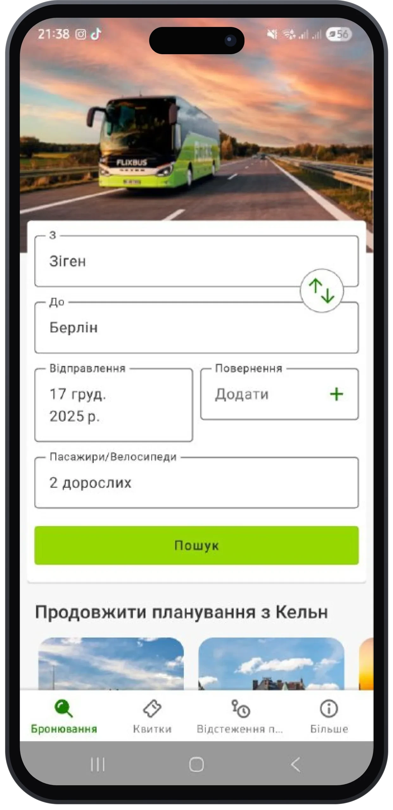
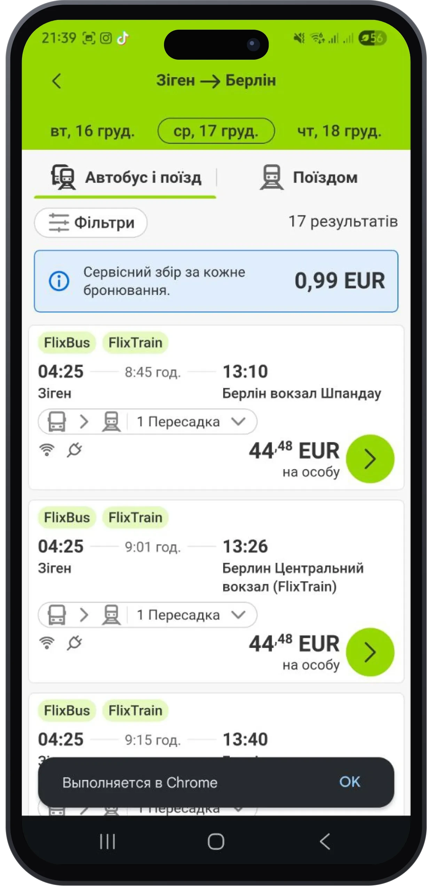
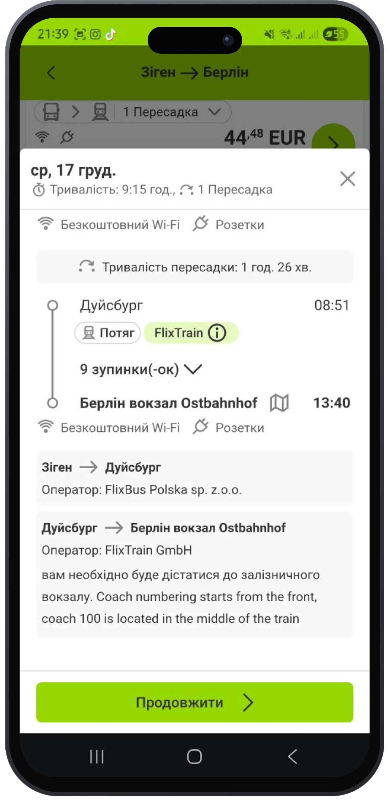

FlixBus / FlixTrain
- Verbindungssuche
- Ein schneller, klarer Einstieg ohne zusätzliche Schritte. Einfacher als bei der DB, aber weniger flexibel für komplexe Reisen.
- Verbindungsliste
- Die Karten sind gut lesbar, das Wichtigste ist sofort sichtbar. Informationen zu Umstiegen sind weniger sichtbar als bei der DB.
- Verbindungsdetails
- Die Route steht in einer Linie und liest sich mühelos, mit weniger Tiefe und Kontrolle über Details als im DB Navigator.


